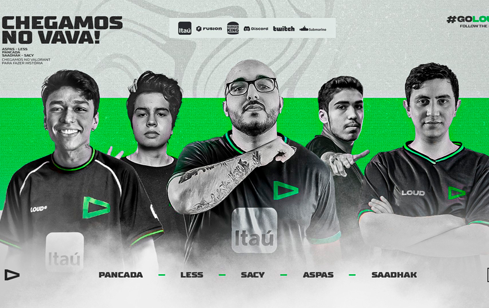

LOUD NO VALORANT
INICIO
A loud iniciou sua trajetória no cenário competitivo de valorant em 2022, onde se consagrou campeã de competições importantes. O time que havia sido criado em 2022 "copou" três títulos, sendo dois nacionais e um internacional. O time foi considerado por muitos um dos melhores, se não o melhor time do Brasil. Na sua formação inicial o time contava com grandes nomes como Gustavo “Sacy” Rossi, o argentino Matias “Saadhak” Delipetro, Eric “Aspas” Santos, Felipe “Less” Basso, Brayan “pANcada” Luna. Atualmente a equipe passou por uma reformulação, com a saída dos jogadores Sacy e Aspas, tivemos a entrada de Cauan “Cauanzin” Pereira e Arthur “Tuyz” Vieira.
TÍTULOS
- Titulos oficiais
- VCT Brasil 2022 1°split
- VCT Brasil 2022 2°split
- VALORANT Champions 2022
- VCT Americas 2023
- Cauan “Cauanzin” Pereira
- Arthur “Tuyz” Vieira.
- Brayan “pANcada” Luna
- Felipe “Less” Basso
- Matias “Saadhak” Delipetro
- Tecnico: sem tecnico até o presente momento.
LOUD NO LOL
...
...
...
...
- Yago
- Cauan7
- Draxx7
- Lost
- tecnico: Frois
Titulos
- Titulos oficiais
- Copa America 2020
- LBFF 2022
- LBFF 2023
- Titulos de Campeonatos Amador
- Copa GWL Mobile 2023
- Star Cup 2023
- The Citzens Elite 2023
- Liga Talents Mobile 2023
- Super Liga 2024
- Global Games Mobile
- Copa GWL Mobile 2024